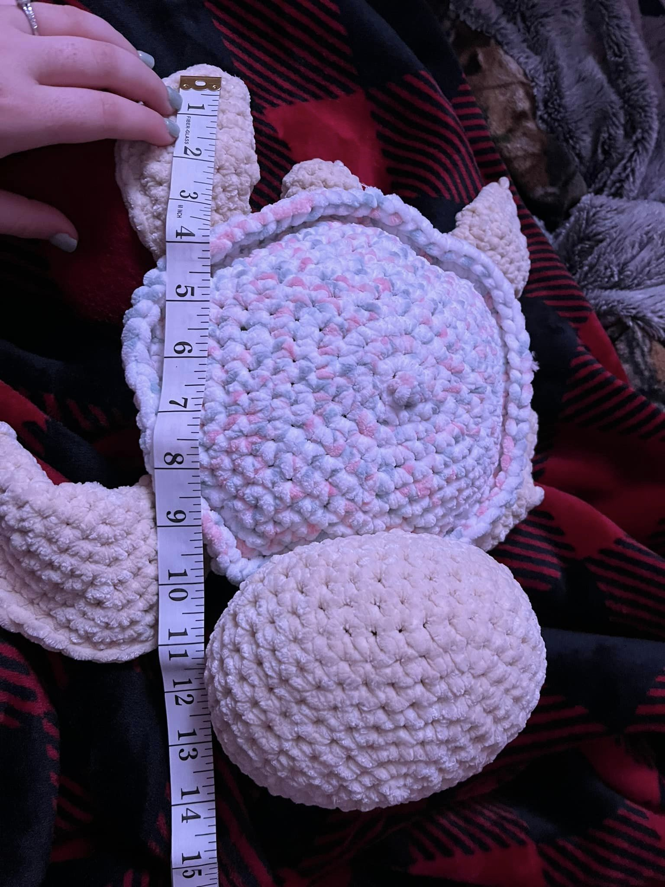

Stuffed Animals
Crocheting stuffed animals is also known as Amigurumi. Which is the art of Crocheting stuffed yarn creatures of any size (usually small, but recently very popularized in all sizes). This art is very popular at craft shows, marketplaces, and online craft websites such as Esty. The price of these yarn creatures are typically between $5 to $100+.
This was my first "big" project and there were some bumps along the way but not as bad as I thought it was going to be. I ended up pricing it at $20 and it sold at the first craft show I had it out!
Amigurumi is often stitched in a spiral pattern and usually the stuffed animal is given eyes (usually plastic, called safety eyes), filled with stuffing and sewed or crocheted closed. Crocheting stuffed animals is a timely process and can take anywhere from 1 hour to multiple days depending on the design and pattern.
Tutorial Video
CrochetByGenna on Youtube is one of my favorite crochet-er to watch and take notes and tips and tricks from. Plus she makes some of the cutest creatures!!! She has great tutorial videos as well as showing how she sells her product and many Q&As about her journey in crocheting, selling and everyone small business. Plus she goes at real-time speed to make sure you know the hand movements and what you should be doing to accomplish the end result.
This is the lastest video I have watched and it is going to be my next project. I have made a 14 inch turtle (the one above) and a 21 inch turtle, which have both turned out very well, so I am excited to follow this tutorial and make my own HUMAN SIZED TURTLE!!